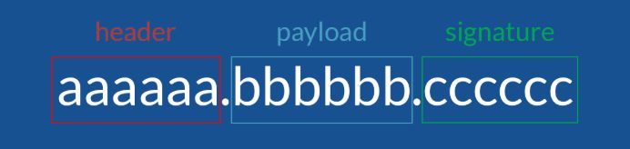
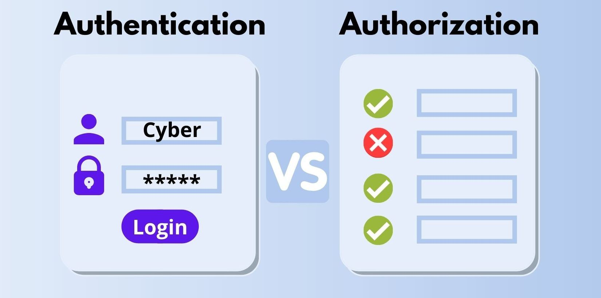

2026학년도 2학기 실전웹서비스개발
실전 웹서비스개발 – 8주차
웹 서비스 인증과 보안
LECTURE 08
01
사용자 인증의 원리
요청한 사용자의 신원을 확인하는 원리
서비스의 사용자 식별
저장된 데이터와 요청한 사용자를 연결할 필요
- 사용자 식별 - 요청과 사람의 연결
- 같은 사용자의 여러 요청과 기록을 하나의 기준으로 연결
- 저장된 내용과 그 내용을 보낸 사람을 구분
- 데이터 관계의 확장 - 기록에 작성자 연결
- 맛집 정보에 사용자 제보를 연결하면 작성자 식별도 필요
- 데이터의 존재만으로 요청자의 신원이 확인되지는 않음
| 저장된 기록 | 현재 알 수 있는 정보 | 추가로 필요한 연결 |
|---|---|---|
| 맛집 place-01 | 이름 · 위치 | 해당 맛집에 대한 제보 |
| 제보 r101 | 맛집 정보 · 제보 내용 | 제보한 사용자 |
-
사용자 u123
같은 사람의 여러 요청
-
사용자와 기록 연결
누가 보냈는지 구분
-
제보 r101
사용자에게 연결된 기록
사용자 계정
서비스 안에서 같은 사용자를 구분하는 고유 식별자
- 사용자 계정 - 한 사용자를 구분하는 기록
- 고유한 사용자 ID를 기준으로 이름·연락처 등 연결
- 표시 이름이 바뀌어도 같은 ID로 계정 유지
- 고유 ID - 사용자 기록의 연결 기준
- 제보의 작성자를 이름 문자열 대신 사용자 ID로 저장
- ID는 사용자를 가리키는 값이며 신원 증명과는 별개
| 시점 | 사용자 ID | 표시 이름 | 제보의 사용자 ID |
|---|---|---|---|
| 변경 전 | u123 | 민수 | r101 → u123 |
| 이름 변경 후 | u123 | 민수의 맛지도 | r101 → u123 |
클라이언트 입력의 신뢰 경계
사용자가 보낸 주장과 서버가 확인한 사실의 구분
- 신뢰 경계 - 주장과 확인된 사실의 구분
- 클라이언트가 보내는 값은 사용자가 변경 가능
- 서버는 요청의 사용자 ID를 그대로 신뢰할 수 없음
- 요청의 주장 - 확인이 필요한 입력
- 다른 계정의 ID를 아는 것만으로 그 계정의 사용자가 되지는 않음
- 요청자를 확인할 근거를 서버에서 별도로 판단
브라우저
FoodMap 서버
-
브라우저
요청에 userId=u123 입력
-
브라우저
보내기 전에 u999로 변경 가능
-
브라우저 → FoodMap 서버
요청 본문 · userId=u999
-
FoodMap 서버
수신한 주장 신원 확인의 근거가 별도로 필요
사용자 인증
계정에 대한 증거를 확인해 요청자의 신원을 판단하는 과정
- 사용자 인증 - 계정에 대한 증거의 검증
- 요청자가 주장한 계정을 찾은 뒤 적절한 증거 확인
- 비밀번호 방식에서는 해당 계정의 비밀번호 지식 검증
- 인증 결과 - 확인된 사용자와 요청의 연결
- 검증에 성공한 요청을 서버가 확인한 사용자 ID에 연결
- 계정 식별과 그 계정의 사용자임을 증명하는 과정은 구분
| 입력 | 역할 |
|---|---|
| 이메일 | 확인할 계정의 선택 |
| 비밀번호 | 해당 계정에 대한 증거 |
로그인
이메일
student@example.com
비밀번호
••••••••
로그인
비밀번호 해시
비밀번호 원문 대신 검증용 값을 생성해 저장하는 원리
- 비밀번호 해시 - 원문 대신 보관하는 검증값
- 입력에서 계산한 값을 저장해 원문 보관을 피하는 구조
- 로그인 입력이 저장된 검증 정보와 일치하는지 확인
- 전용 해시 함수 - 반복 추측의 비용 증가
- 비밀번호 저장을 위해 설계한 계산 비용이 큰 함수 사용
- 해시가 유출되어도 비밀번호 추측 위험은 남아 있음
-
비밀번호 입력
가입 또는 로그인 시 입력
-
비밀번호 전용 해시
추측 비용을 높이는 계산
-
검증 정보 저장
원문 대신 비교에 필요한 값
| 저장 방식 | 유출 시 의미 |
|---|---|
| 비밀번호 원문 | 비밀번호 자체가 노출 |
| 비밀번호 해시 | 추측과 검증 시도는 여전히 가능 |
비밀번호 솔트
같은 비밀번호도 서로 다른 해시가 되도록 더하는 계정별 값
- 솔트 - 해시 계산에 더하는 무작위 값
- 같은 비밀번호도 계정별로 서로 다른 해시 생성
- 한 번 계산한 추측 결과를 여러 계정에 재사용하기 어렵게 구성
- 솔트의 보관 - 검증에 재사용할 정보
- 비밀키와 달리 해시와 함께 보관 가능
- 검증할 때 해당 계정에 저장된 솔트를 다시 사용
| 계정 | 입력 비밀번호 | 계정별 솔트 | 검증 정보 |
|---|---|---|---|
| u123 | same-password | salt-A | salt-A + hash-A |
| u456 | same-password | salt-B | salt-B + hash-B |
-
서로 다른 솔트
계정마다 생성한 무작위 값
-
서로 다른 해시
같은 비밀번호도 다른 결과
-
검증 시 재사용
해당 계정에 저장된 솔트 사용
비밀번호 로그인
입력한 비밀번호를 저장된 검증 정보와 대조하는 흐름
- 비밀번호 로그인 - 계정 조회와 입력 검증
- 가입 시 해시·솔트 등 비밀번호 검증 정보 저장
- 로그인 시 입력과 저장 정보를 검증 함수에 전달
- 검증 성공 - 현재 요청의 사용자 확인
- 서버가 조회한 계정의 사용자 ID를 인증 결과로 사용
- 이 단계의 결과는 현재 로그인 요청에서 확인한 신원
-
로그인 정보 입력
이메일·비밀번호 브라우저 → 서버
-
서버의 증거 검증
계정의 저장된 해시·솔트 입력 비밀번호와 대조
-
사용자 ID 확인
검증 성공 → u123 검증 실패 → 인증 거부
02
로그인 상태의 유지
이후 요청에서도 인증된 사용자를 식별하는 방법
HTTP의 무상태성
이전 요청의 인증 결과가 새 요청에 자동으로 이어지지 않는 특성
- HTTP 무상태성 - 요청 사이의 자동 연결 부재
- 한 요청에서 확인한 인증 결과가 다음 요청에 자동 첨부되지 않음
- 서버는 새 요청에서 사용자를 확인할 정보를 다시 필요로 함
- 로그인 유지 - 애플리케이션의 상태 연결
- 사용자 확인과 여러 요청의 로그인 유지는 서로 다른 문제
- 요청 사이를 연결할 정보를 애플리케이션에서 별도로 관리
브라우저
FoodMap 서버
-
브라우저 → FoodMap 서버
① 로그인 요청
-
FoodMap 서버
현재 요청의 사용자 확인
-
FoodMap 서버 → 브라우저
로그인 결과
-
브라우저 → FoodMap 서버
② 새로운 맛집 조회 요청
-
FoodMap 서버
이전 인증 결과가 자동으로 포함되지 않음
쿠키
브라우저가 값을 저장하고 조건에 맞는 요청에 첨부하는 방식
- 쿠키 - 브라우저의 값 보관·첨부 기능
- 응답의 Set-Cookie로 받은 값을 브라우저에 보관
- 전송 조건에 맞는 요청의 Cookie 헤더에 값 첨부
- 전달 수단 - 신원 확인과 구분되는 역할
- 쿠키 자체가 사용자의 신원을 확인하지는 않음
- 서버는 전달받은 값의 의미와 유효성을 별도로 판단
브라우저
서비스 서버
-
서비스 서버 → 브라우저
응답 · Set-Cookie: name=value
-
브라우저
브라우저에 값 저장
-
브라우저 → 서비스 서버
이후 요청 · Cookie: name=value
응답 헤더 · 발췌
Set-Cookie: name=value
이후 요청 헤더 · 발췌
Cookie: name=value
서버 세션
세션 식별자로 서버에 보관한 로그인 상태를 찾는 구조
- 서버 세션 - 서버에 보관한 로그인 상태
- 로그인 성공 후 임의 세션 ID와 사용자 ID를 연결해 저장
- 브라우저에는 상태를 찾을 세션 ID를 쿠키로 전달
- 세션 조회 - 식별자로 저장 상태 확인
- 이후 요청의 세션 ID로 서버 기록을 조회
- 브라우저가 주장한 사용자 ID 대신 서버의 연결 기록 사용
서버에 보관한 세션 정보 · 예시
{
"userId": "u123"
}브라우저
서비스 서버
-
브라우저 → 서비스 서버
로그인 정보 전달
-
서비스 서버
검증 후 세션 생성 임의 세션 ID → userId
-
서비스 서버 → 브라우저
Set-Cookie: session_id=<random-id>
-
브라우저 → 서비스 서버
Cookie: session_id=<random-id>
-
서비스 서버
ID로 서버 세션 조회 연결된 사용자 확인
-
서비스 서버 → 브라우저
요청 처리 결과
인증 토큰
이후 요청에서 인증 결과를 확인하는 데 사용하는 증표
- 토큰 - 요청에 제시하는 자격정보
- 서버의 검증을 거쳐 사용자 또는 접근 자격에 연결
- 세션 식별자도 서버 기록을 조회하는 토큰의 한 형태
- 형식과 전달 - 서로 다른 선택 기준
- 서버 기록을 찾는 형식과 정보를 직접 담는 형식 존재
- 액세스 토큰은 요청 헤더 등으로 API에 전달 가능
브라우저
서비스 서버
-
브라우저 → 서비스 서버
로그인 정보 전달
-
서비스 서버 → 브라우저
토큰 발급
-
브라우저 → 서비스 서버
Authorization: Bearer <token>
-
서비스 서버
토큰 확인
-
서비스 서버 → 브라우저
검증 후 요청 처리 결과
토큰의 서명
키를 이용해 토큰의 변조 여부와 발급 주체를 확인하는 원리
- 서명 - 토큰의 무결성을 확인하는 검증값
- 발급자가 관리하는 키로 토큰 내용에 대응하는 값 생성
- 수신자는 신뢰하는 발급자의 키와 방법으로 검증
- 보호 범위 - 변조 탐지와 내용 공개의 구분
- 내용만 바꾼 토큰은 기존 서명과 일치하지 않아 검증 실패
- 서명은 암호화와 달리 내용의 비밀성을 보장하지 않음
| 검증할 증표 | 신뢰하는 키로 검증 | 판단 |
|---|---|---|
| 사용자 u123 + 발급된 서명 | 내용과 서명의 일치 | 무결성 확인 |
| 사용자 u999 + 기존 서명 | 내용만 바뀌어 불일치 | 검증 실패 |
JWT의 구조
서명된 토큰에 사용자 정보와 유효 조건을 담는 형식
- JWT - 주장과 유효 조건을 담는 토큰 형식
- 서명형 JWT는 헤더·페이로드·서명의 세 부분으로 구성
- 페이로드에 사용자 식별자와 발급·수신·만료 조건 포함
- 내용은 읽을 수 있으므로 비밀번호 등 비밀정보 제외
| 필드 | 의미 |
|---|---|
| sub | 사용자 식별자 |
| iss | 발급자 |
| aud | 수신 대상 |
| exp | 만료 시각 · Unix 초 |

Header · HS256을 선택한 예시
{
"alg": "HS256",
"typ": "JWT"
}
Payload · 설명용 값
{
"sub": "u123",
"iss": "https://auth.example.com",
"aud": "foodmap-api",
"exp": 1800000000
}JWT 검증
서명과 발급 조건을 확인해 토큰의 수용 여부를 판단하는 과정
- JWT 검증 - 주장을 신뢰할 조건 확인
- 내용을 읽는 디코딩과 신뢰를 결정하는 검증은 별도
- 서명·발급자·수신 대상·만료를 모두 통과한 신원만 사용
| 검증 대상 | 수용 조건 |
|---|---|
| 서명 | 허용한 알고리즘·신뢰하는 키로 검증 |
| iss | 신뢰하는 발급자와 일치 |
| aud | 이 API가 수신 대상 |
| exp | 만료 시각 이전 |
브라우저
서비스 서버
-
브라우저 → 서비스 서버
로그인 정보 전달
-
서비스 서버 → 브라우저
JWT 발급
-
브라우저 → 서비스 서버
Authorization: Bearer <JWT>
-
서비스 서버
서명·발급 조건 검증
-
서비스 서버 → 브라우저
검증 후 요청 처리 결과
인증 상태의 만료
한 번 확인한 인증 결과를 계속 신뢰할 수 있는 시간의 제한
- 인증 만료 - 과거 인증을 신뢰하는 시간 제한
- 한 번 확인한 인증 결과의 효력을 무기한 유지하지 않음
- 브라우저에 값이 남아 있어도 만료된 자격은 거부
- 만료 기준은 클라이언트 변경에 의존하지 않고 서버에서 적용
| 방식 | 만료 판단의 기준 |
|---|---|
| 서버 세션 | 마지막 활동 이후의 시간 · 생성 이후의 최대 수명 |
| JWT | 서명과 발급 조건 검증에 포함되는 exp |
-
09:00
인증 상태 생성세션 또는 JWT 발급
-
09:30
유효 기간 종료서버 세션 종료 또는 exp 도달
-
09:31
같은 값으로 요청서버의 인증 수용 거부
리프레시 토큰
비밀번호 재입력 없이 새 액세스 토큰을 발급받는 자격정보
- 리프레시 토큰 - 새 액세스 토큰 발급 자격
- 짧은 액세스 토큰 수명과 반복 로그인 부담을 함께 고려
- 일반 데이터 API가 아닌 인증 시스템에 제출
- 갱신 절차 - 별도 자격 검증 후 재발급
- 인증 시스템이 갱신 자격을 확인한 뒤 새 토큰 발급
- 계속된 토큰 발급에 악용될 수 있으므로 갱신 자격도 보호
브라우저
데이터 API
인증 시스템
-
브라우저 → 데이터 API
액세스 토큰으로 데이터 요청
-
데이터 API → 브라우저
만료된 토큰 거부
-
브라우저 → 인증 시스템
리프레시 토큰으로 갱신 요청
-
인증 시스템
갱신 자격 확인
-
인증 시스템 → 브라우저
새 액세스 토큰
-
브라우저 → 데이터 API
새 액세스 토큰으로 재요청
로그아웃과 인증 철회
인증 방식에 따라 사용 중인 로그인 자격을 종료하는 방법
- 로그아웃 - 사용하던 자격정보의 효력 종료
- 브라우저의 로그인 표시나 보관값 삭제만으로 종료되지 않음
- 서버 기록·갱신 자격 등 실제 수용 지점에서 효력 종료
- 철회 범위 - 방식별로 다른 종료 시점
- 세션 기록 무효화와 새 액세스 토큰의 발급 중단을 구분
- 이미 발급된 JWT는 만료 또는 추가 철회 검사까지 유효할 수 있음
| 종료 위치 | 처리 | 효력 |
|---|---|---|
| 브라우저 | 보관한 쿠키·토큰 삭제 | 다른 곳에 복사된 자격정보의 효력은 별도 |
| 서버 세션 | 서버의 세션 기록 무효화 | 해당 세션 ID의 조회 실패 |
| 리프레시 토큰 | 갱신 자격 철회 | 새 액세스 토큰 발급 중단 |
| 발급된 JWT | 만료 또는 추가 철회 검사 | 서명·시간만 검사하면 만료까지 유효 가능 |
03
외부 인증과 소셜 로그인
외부 서비스의 인증 결과와 서비스 사용자 계정의 연결
외부 인증 제공자
다른 서비스가 확인한 사용자 신원을 활용하는 구조
- 외부 인증 제공자 - 사용자 확인을 맡는 서비스
- 제공자가 자신의 계정으로 사용자를 인증
- 연결하는 서비스는 전달받은 인증 결과를 검증해 활용
- 책임의 분리 - 외부 인증과 내부 계정 관리
- 외부 계정의 비밀번호를 연결 서비스가 받아 저장하지 않음
- 서비스 내부의 사용자 기록과 기능은 해당 서비스에서 관리
로그인
Google로 로그인
네이버로 로그인
| 인증을 맡는 서비스 | 사용하는 계정 |
|---|---|
| Google 계정 | |
| Naver | 네이버 계정 |
| Kakao | 카카오 계정 |
OAuth의 접근 권한 위임
사용자가 동의한 범위의 외부 API 접근을 허용하는 방식
- OAuth - 외부 API 접근 권한의 위임
- 사용자가 동의한 범위에서 앱의 데이터 접근 허용
- 외부 비밀번호를 넘기지 않고 액세스 토큰으로 API 호출
- scope - 위임받은 접근 범위
- 앱이 사용할 수 있는 데이터·기능의 범위 표현
- 접근 위임만으로 사용자 신원 확인 절차 전체가 정의되지는 않음
사용자
FoodMap 앱
외부 제공자
외부 API
-
사용자 → 외부 제공자
FoodMap에 허용할 범위 동의
-
외부 제공자 → FoodMap 앱
동의한 범위의 액세스 토큰 발급
-
FoodMap 앱 → 외부 API
액세스 토큰을 첨부한 요청
-
외부 API
토큰·허용 범위 확인
-
외부 API → FoodMap 앱
허용된 데이터 반환
OIDC의 사용자 인증
외부 인증 제공자의 ID 토큰으로 사용자 신원을 확인하는 방식
- OIDC - OAuth에 더한 사용자 인증 규칙
- 제공자가 지원하면 ID 토큰으로 인증 결과 전달
- 서비스는 서명·발급자·수신 대상·유효 조건을 검증
- 토큰의 목적 - 신원과 외부 접근의 구분
- ID 토큰은 서비스를 위한 사용자 인증 결과
- 외부 액세스 토큰은 대상 외부 API의 데이터 접근에 사용
OIDC를 지원하는 인증 결과
신원 확인 서명 · iss · aud · exp 검증
허용된 외부 데이터 접근 대상 API의 접근 조건 확인
인가 코드 흐름
브라우저가 전달한 임시 코드를 토큰으로 교환하는 과정
- 인가 코드 - 토큰과 교환하는 일회용 값
- 외부 인증 후 브라우저가 등록된 복귀 주소로 코드 전달
- 짧은 수명의 코드는 앱·복귀 주소 등의 조건에 연결
- 서버의 교환 - 코드로 토큰 발급 요청
- 서비스 서버가 제공자의 토큰 발급 창구에 코드 제출
- 제공자가 코드·클라이언트 조건을 검증한 뒤 토큰 반환
브라우저
FoodMap 서버
외부 제공자
-
FoodMap 서버 → 브라우저
외부 인증 주소로 이동 안내
-
브라우저 → 외부 제공자
등록한 복귀 주소를 포함한 요청
-
외부 제공자 → 브라우저
인증·동의 후 복귀 안내 · code
-
브라우저 → FoodMap 서버
복귀 주소 요청 · code
-
FoodMap 서버 → 외부 제공자
일회용 code의 교환 요청
-
외부 제공자 → FoodMap 서버
코드·클라이언트 조건 검증 후 토큰
로그인 요청의 state
로그인을 시작한 요청과 돌아온 응답을 연결하는 값
- state - 시작한 요청과 복귀 응답의 연결값
- 로그인 시작 시 예측하기 어려운 일회용 값 생성
- 값을 해당 브라우저의 로그인 시도와 연결해 임시 보관
- 왕복값 검증 - 요청 연결의 확인
- 복귀한 값이 없거나 시작한 값과 다르면 연결 중단
- 일치 여부는 사용자 신원·토큰 서명 검증을 대신하지 않음
브라우저
FoodMap 서버
외부 제공자
-
FoodMap 서버
무작위 state 생성·보관
-
FoodMap 서버 → 브라우저
외부 인증 주소 · state
-
브라우저 → 외부 제공자
인가 요청 · state
-
외부 제공자 → 브라우저
인증·동의 후 복귀 · code + state
-
브라우저 → FoodMap 서버
복귀 주소 · code + state
-
FoodMap 서버
시작한 요청의 state와 비교 불일치 → 거부
-
FoodMap 서버 → 외부 제공자
일치한 요청의 code 교환
-
외부 제공자 → FoodMap 서버
검증 후 토큰 응답
인가 코드의 PKCE 보호
코드 발급 요청과 코드 교환 요청을 같은 시작 주체에 연결하는 증명
- PKCE - 인가 코드의 교환을 묶는 증명
- 로그인마다 verifier를 생성해 교환 전까지 비밀로 보관
- verifier를 변환한 challenge를 인가 요청에 먼저 전달
- 교환 시 확인 - 처음 요청과 같은 증명 비교
- 제공자가 제출된 verifier를 변환해 저장된 challenge와 대조
- 코드만 가로챈 상대는 교환에 필요한 verifier가 없음
브라우저
FoodMap 서버
외부 제공자
-
FoodMap 서버
verifier 생성·서버 보관 S256 변환 → challenge
-
FoodMap 서버 → 브라우저
외부 인증 주소 · state + challenge
-
브라우저 → 외부 제공자
state · code_challenge · code_challenge_method=S256
-
외부 제공자 → 브라우저
인증·동의 후 복귀 · code + state
-
브라우저 → FoodMap 서버
복귀값 전달 → 서버의 state 확인
-
FoodMap 서버 → 외부 제공자
code + code_verifier
-
외부 제공자
verifier 변환값과 코드에 연결된 challenge 비교
-
외부 제공자 → FoodMap 서버
일치·코드 검증 성공 시 토큰
외부 계정과 서비스 계정의 연결
인증 제공자와 사용자 식별자로 내부 계정을 연결하는 기준
- 계정 연결 - 외부 신원을 내부 ID에 대응
- 검증한 발급자 iss와 사용자 식별자 sub의 조합 사용
- 연결된 내부 ID를 기준으로 서비스의 제보·사용자 기록 유지
- 연결 기준 - 이름·이메일과 신원의 구분
- 다른 발급자가 같은 sub 값을 부여할 수 있음
- 이름·이메일 일치만으로 자동 병합하지 않으며 양쪽 계정 확인 필요
| 발급자 iss | 외부 ID sub | 내부 사용자 ID |
|---|---|---|
| provider-A | 42 | u123 |
| provider-B | 42 | u456 |
-
외부 신원 검증
발급자와 사용자 ID의 조합
-
내부 계정 대응
확인된 연결 기록 조회
-
서비스 기록 연결
내부 ID로 제보 유지
소셜 로그인 이후의 서비스 인증
외부 인증 결과를 서비스의 로그인 상태로 이어가는 과정
- 서비스 인증 - 확인된 내부 계정의 로그인 유지
- 외부 신원을 검증한 뒤 연결된 내부 사용자 ID 확인
- 서비스가 자신의 세션 또는 토큰으로 로그인 상태 생성
- 공통 결과 - 로그인 방식과 내부 사용자 구분
- 비밀번호·소셜 로그인 모두 확인된 내부 ID로 요청 연결
- 외부 액세스 토큰은 필요한 외부 API 접근에만 사용
외부 제공자
FoodMap 서버
브라우저
-
외부 제공자 → FoodMap 서버
외부 인증 결과
-
FoodMap 서버
검증 후 내부 계정 u123 연결
-
FoodMap 서버 → 브라우저
FoodMap 세션 또는 토큰 발급
-
브라우저 → FoodMap 서버
FoodMap 로그인 자격으로 API 요청
-
FoodMap 서버
서비스가 수용하는 자격 검증
04
권한과 데이터 접근 제어
사용자에게 허용할 기능과 데이터의 범위
요청의 인가
사용자·행동·대상을 기준으로 요청 허용 여부를 결정하는 과정
- 인가 - 대상과 행동의 허용 여부 판단
- 인증으로 확인한 사용자에게 서비스의 허용 규칙 적용
- 누가 · 무엇을 대상으로 · 어떤 작업을 하는지 함께 확인
- 요청별 판단 - 로그인 이후의 권한 확인
- 로그인 성공만으로 모든 데이터의 수정 권한이 생기지는 않음
- 같은 사용자라도 대상과 행동에 따라 허용 범위가 달라짐

역할 기반 접근 제어
역할에 부여된 권한으로 기능 사용 범위를 정하는 방식
- 역할 기반 제어 - 역할과 기능 권한의 연결
- 사용자에게 역할을 부여하고 역할별 허용 기능 정의
- 일반 사용자와 운영자의 업무에 맞춰 권한 범위 구분
- 최소 권한 - 업무에 필요한 범위만 부여
- 역할 정보는 서버가 신뢰하는 기록에서 확인
- 요청에 임의로 적은 운영자 표시만으로 권한을 높이지 않음
| 확인된 역할 | 제보 작성 | 전체 제보 조회 |
|---|---|---|
| 일반 사용자 | 허용 | 거부 |
| 운영자 | 허용 | 허용 |
소유자 기반 접근 제어
요청자와 데이터 소유자의 관계로 접근 범위를 정하는 방식
- 소유자 기반 제어 - 사용자와 행의 관계 확인
- 인증된 사용자 ID와 대상 행의 소유자 ID 비교
- 같은 역할의 사용자라도 자신의 데이터만 허용 가능
- 소유 정보 - 접근 판단을 위한 저장 기준
- 데이터 저장 시 서버가 확인한 사용자 ID를 소유자로 연결
- 조회·수정에서도 해당 관계를 다시 확인한 뒤 처리
| 확인된 요청자 | 대상 제보 | 저장된 소유자 | 조회·수정 |
|---|---|---|---|
| u123 | r101 | u123 | 허용 |
| u123 | r102 | u456 | 거부 |
기본 거부 정책
명시적으로 허용한 규칙이 없으면 요청을 거부하는 기준
- 기본 거부 - 명시적 허용 외의 요청 차단
- 허용 조건이 충족된 요청만 처리
- 규칙 없음·정보 부족·알 수 없는 역할은 거부로 판단
- 허용 규칙 - 공개 기능도 포함하는 정책
- 로그인 없는 공개 조회도 허용 조건으로 표현
- 기본 거부가 모든 기능의 로그인 강제를 뜻하지는 않음
행동 · 역할 · 대상 데이터의 관계
정해진 공개 조회 확인된 역할·소유 관계
규칙 없음 · 정보 부족 알 수 없는 역할
API 접근 제어
서버가 요청마다 사용자와 대상 데이터의 권한을 확인하는 구조
- API 접근 제어 - 실제 처리 경계의 권한 검사
- 서버가 요청마다 로그인 자격을 검증해 사용자 확인
- 행동과 대상의 권한을 확인한 뒤 데이터 처리
- 화면과 서버 - 표시 조건과 강제 조건의 구분
- 버튼을 숨겨도 사용자는 API 요청을 직접 전송 가능
- 권한 없는 요청은 서버에서 데이터 처리 전에 중단
사용자 요청
데이터 API
DB
-
사용자 요청 → 데이터 API
화면 버튼 없이도 직접 API 요청 가능
-
데이터 API
① 로그인 자격 검증
-
데이터 API
② 행동·대상의 권한 확인 실패 시 처리 중단
-
데이터 API → DB
허용된 요청만 데이터 처리
-
DB → 데이터 API
처리 결과
-
데이터 API → 사용자 요청
응답
행 수준 보안 정책
데이터베이스의 각 행에 접근 규칙을 적용하는 방식
- RLS - 데이터베이스의 행별 접근 조건
- 테이블의 기본 권한에 더해 적용 대상 행의 정책 검사
- 조건이 참인 행만 요청의 접근 범위에 포함
- 사용자 문맥 - 정책이 판단할 검증된 정보
- 검증된 사용자 ID와 저장된 소유자 ID를 비교 가능
- 사용자 정보의 전달 구조와 RLS 적용 역할을 함께 확인
Supabase · 자기 제보 SELECT 정책
alter table public.reports enable row level security; create policy "read own reports" on public.reports for select to authenticated using ((select auth.uid()) = user_id);
SELECT 권한이 있는 RLS 적용 역할 · 다른 허용 정책이 없는 예시
| 행 | user_id | u123의 결과 |
|---|---|---|
| r101 | u123 | 반환 |
| r102 | u456 | 제외 |
| r103 | u123 | 반환 |
u123·u456은 UUID의 축약 표시 · auth.uid()는 Supabase Auth가 검증한 사용자 ID
API 키의 권한 범위
애플리케이션의 API 접근 자격과 사용자 인증의 구분
- API 키 - 애플리케이션의 접근 자격
- 로그인한 개인의 신원과 애플리케이션 접근 자격은 별개
- 공개 가능한 키와 서버 전용 키의 권한 범위 구분
- 특권 서버 경로 - API의 인가 책임
- Supabase secret 키는 RLS를 우회하는 특권 접근 가능
- 브라우저 노출을 막고 서버에서 사용자별 요청 권한 검사
| 자격정보 | 식별·권한의 대상 | 배치 위치 | DB 접근 |
|---|---|---|---|
| publishable key | 애플리케이션 | 브라우저 사용 가능 | 사용자 문맥과 RLS 정책 적용 |
| secret key | 서버의 특권 접근 | 서버 전용 | RLS 우회 가능 · API 인가 필요 |
| 사용자 JWT | 로그인한 사용자 | 해당 사용자의 요청 | 검증된 사용자 정보 제공 |
FoodMap의 접근 정책
역할과 데이터 소유 관계를 조합한 요청별 허용 기준
- 접근 정책 - 행위자·행동·대상의 허용 규칙
- 공개 조회·개인 제보·관리 기능에 필요한 조건을 함께 명세
- 화면의 기능 범위와 실제 데이터 접근 범위를 일치
- 정책 적용 - API와 DB의 역할 확인
- API 검사와 RLS 적용 경로의 DB 조건을 각각 확인
- 조회 정책만으로 수정 등 다른 작업의 권한이 완성되지는 않음
| 행위자 · 행동 | 대상 | API 검사 | RLS 적용 경로의 조건 |
|---|---|---|---|
| 누구나 · 맛집 조회 | 공개 목록 | 공개 조회 규칙 | 공개 대상 행 |
| 작성자 · 제보 조회·수정 | 본인의 제보 | 사용자 ID = 소유자 ID | 소유자 일치 · 작업별 정책 |
| 운영자 · 전체 제보 조회 | 전체 제보 | 신뢰하는 운영자 역할 | 검증된 운영자 문맥 |
05
관리자 시스템과 운영 업무
운영자의 권한을 서비스 관리 업무로 연결하는 구조
사용자 서비스와 관리자 시스템
이용자의 서비스 이용과 운영자의 관리 업무를 나누는 구조
- 관리자 시스템 - 운영 업무를 위한 기능과 화면
- 사용자의 탐색·제보와 운영자의 전체 제보 관리를 구분
- 업무 대상과 처리 목적에 맞춰 화면 구성
- 공통 기반 - 기능 분리와 권한 경계
- 사용자 영역과 관리자 영역은 서버·DB 공유 가능
- 관리 화면의 진입과 별개로 모든 관리 요청에 운영자 권한 적용
사용자 서비스
맛집 탐색 · 제보
- 아주식당 · 위치 보기
- 새로운 맛집 제보
관리자 시스템
전체 제보 조회 · 관리
- r101 · 작성자 u123
- r102 · 작성자 u456
관리자 권한의 경계
서비스 운영에 필요한 권한을 업무 범위에 맞게 제한하는 기준
- 관리 권한 - 시스템별로 다른 업무 범위
- 서비스 운영·DB 구조 변경·배포 계정 관리는 서로 다른 권한
- 역할 이름이 같아도 관리 대상과 허용 기능은 별도
- 업무 한정 - 필요한 관리 기능만 제공
- 서비스 운영자에게 서버 전용 키나 플랫폼 소유 권한을 자동 전달하지 않음
- 각 시스템에서 담당 업무에 필요한 권한을 별도로 부여
| 권한 | 관리 대상 | 허용 업무 예시 | 자동으로 포함되지 않는 권한 |
|---|---|---|---|
| FoodMap 운영자 | 서비스의 제보 | 제보 조회·관리 | DB 구조 변경 |
| DB 관리 권한 | 테이블·정책 | 스키마·접근 정책 변경 | 배포 계정 관리 |
| 플랫폼 관리 권한 | 프로젝트·배포 | 프로젝트 설정·멤버 관리 | 앱 내부 운영자 역할 |
운영 업무의 상태 전이
제보의 처리 상태와 허용 가능한 변경을 정의하는 방식
- 상태 전이 - 업무 상태의 허용된 변경
- 현재 상태와 그 상태에서 가능한 다음 상태를 함께 정의
- 제보는 검토 대기에서 승인 또는 반려로 이동하는 예시
- 전이 조건 - 권한과 현재 상태의 확인
- 서버가 운영자 권한과 대상의 현재 상태를 모두 검사
- 이미 처리된 제보의 재처리 가능 여부도 업무 정책으로 결정
r101의 현재 상태 확인
운영자 확인 + 대기 상태 제보를 받아들이는 결정
운영자 확인 + 대기 상태 제보를 받아들이지 않는 결정
콘텐츠 공개 상태
검토 결과와 사용자에게 보이는 상태를 구분하는 기준
- 검토 결과 - 제보를 받아들였는지의 판단
- 승인·반려는 운영자가 내린 검토 결정의 기록
- 노출을 중지해도 기존 검토 이력은 유지 가능
- 공개 상태 - 이용자에게 보여줄지의 판단
- 승인된 내용도 정보 확인 중에는 비공개로 유지 가능
- 공개 목록은 검토 결과와 서비스의 공개 조건을 함께 적용
| 검토 결과 | 공개 여부 | 사용자 목록 | 업무 상황 |
|---|---|---|---|
| 승인 | 공개 | 노출 | 검토와 정보 확인 완료 |
| 승인 | 비공개 | 미노출 | 추가 정보 확인 중 |
| 대기·반려 | 비공개 | 미노출 | 공개 조건 미충족 |
운영 작업의 트랜잭션
함께 성공해야 하는 데이터 변경을 하나의 작업으로 묶는 원리
- 트랜잭션 - 여러 변경을 하나의 작업으로 처리
- 하나의 운영 결정에 필요한 DB 변경을 같은 범위에 묶음
- 모두 성공하면 반영하고 하나라도 실패하면 함께 취소
- 보장 범위 - 같은 DB 트랜잭션의 변경
- 제보 승인과 맛집 등록 중 한쪽만 남는 상태 방지
- 별도 외부 API·브라우저 저장소 변경까지 자동으로 묶이지 않음
같은 DB 트랜잭션
- ① r101 승인 상태 변경
- ② 맛집 place-01 등록
승인 + 등록 함께 반영
승인 변경도 함께 취소
중복 요청의 처리
같은 운영 요청이 반복되어도 결과가 중복되지 않도록 하는 기준
- 멱등성 - 반복 요청에도 같은 작업 효과 유지
- 응답 유실·재시도에 따라 같은 요청이 여러 번 도착 가능
- 트랜잭션의 원자성과 중복 실행 방지는 서로 다른 보장
- 처리 기록 - 작업 식별자와 결과의 연결
- 서버에 작업 식별자·처리 결과를 기록해 재요청에 활용
- 요청 일치 확인·DB 중복 제약·원자적 기록을 함께 적용
운영자 화면
FoodMap 서버
처리 기록 · DB
-
운영자 화면 → FoodMap 서버
승인 요청 · key=approve:r101
-
FoodMap 서버 → 처리 기록 · DB
최초 처리 · 맛집 1건과 결과 기록
-
FoodMap 서버 → 운영자 화면
응답 유실
-
운영자 화면 → FoodMap 서버
같은 키·같은 작업으로 재요청
-
FoodMap 서버 → 처리 기록 · DB
기존 처리 결과 조회
-
처리 기록 · DB → FoodMap 서버
저장된 처리 결과
-
FoodMap 서버 → 운영자 화면
기존 결과 반환 · 맛집은 1건 유지
감사 로그
운영자의 작업 주체·대상·결과를 남기는 기록
- 감사 로그 - 운영 변경의 경위를 남기는 기록
- 행위자·대상·행동·결과·시각을 연결해 변경 경위 확인
- 업무 판단을 설명할 사유가 필요하면 함께 보관
- 기록 보호 - 추적 가능한 정보의 유지
- 비밀번호·토큰 원문 등 재사용 가능한 비밀정보는 제외
- 조회·변경 권한을 제한해 운영 기록의 임의 훼손 방지
| 기록 항목 | 승인 작업의 예시 값 | 확인할 내용 |
|---|---|---|
| 시각 | 2026-11-07 10:00 +09:00 | 언제 |
| 행위자 | op-01 | 누가 |
| 대상 | report:r101 | 어떤 기록을 |
| 행동 · 결과 | approve · success | 어떻게 처리했는지 |
| 사유 | 정보 확인 완료 | 왜 처리했는지 |
06
웹 공격과 방어 원리
인증과 데이터 처리 과정의 위협과 보호 원리
입력 검증
서버가 받은 데이터의 형식과 허용 범위를 확인하는 절차
- 입력 검증 - 처리 조건에 맞는 값의 확인
- 사용자·권한이 확인되어도 입력 데이터의 유효성은 별도
- 필수 항목·자료형·길이·허용 범위를 서버에서 검사
- 브라우저의 입력 제한을 통과했어도 서버 검증은 필요
| 입력 | 결과 |
|---|---|
| 아주식당 · 37.28 | 통과 |
| 공백 이름 · 37.28 | 거부 |
| 아주식당 · 91 | 범위 초과 |
| 아주식당 · "37.28" | 숫자가 아닌 문자열 |
100자 제한은 예시 정책 · 오류를 입력 오류 응답으로 바꾸는 핸들러는 생략
서버 JavaScript · 파싱한 name·latitude 검사
const nameOK =
typeof name === 'string' &&
name.trim().length > 0 &&
name.length <= 100;
const latitudeOK =
Number.isFinite(latitude) &&
latitude >= -90 &&
latitude <= 90;
if (!nameOK || !latitudeOK) {
throw new Error('Invalid report input');
}SQL 인젝션
입력값이 SQL 명령으로 해석될 때의 위험과 방어 원리
- SQL 인젝션 - 입력이 명령문으로 해석되는 문제
- 검색어를 SQL 문자열에 결합하면 데이터와 명령의 경계가 흐려짐
- 의도하지 않은 조회나 변경으로 이어질 수 있음
- 매개변수 쿼리 - 명령 구조와 값의 분리
- SQL 구조를 고정하고 입력값은 별도 매개변수로 전달
- 입력 형식 검사와 함께 DB 접근 경로에서 적용
서버 node-postgres · 연결된 client와 검색 문자열
const result = await client.query( 'SELECT name FROM restaurants WHERE name = $1', [searchTerm] );
searchTerm = "김's 식당" → 따옴표도 값으로 처리 · $1은 테이블명·열명 치환용이 아님
크로스 사이트 스크립팅
사용자 입력이 웹 페이지의 코드로 실행될 때의 위험
- XSS - 사용자 콘텐츠가 실행 코드가 되는 공격
- 입력한 내용이 페이지의 코드로 해석되면 브라우저에서 악성 동작 가능
- 서버에 저장된 내용도 신뢰할 수 있는 출력으로 자동 변환되지 않음
- 출력 처리 - 텍스트와 HTML 해석의 구분
- 일반 제보 설명은 텍스트로 출력해 입력과 실행을 분리
- HTML이 필요하면 허용 요소를 제한하는 정제 과정 적용
React · 문자열을 표시하는 컴포넌트
function ReportText({ report }) {
return <p>{report.description}</p>;
}출력 문맥에 따라 달라지는 해석
태그를 포함한 텍스트로 표시
구조·실행 코드로 처리될 위험
| 사용자 입력 문자열 | 텍스트 출력 결과 |
|---|---|
| <strong>추천</strong> | <strong>추천</strong> |
웹 출처
프로토콜·호스트·포트로 웹 자원의 경계를 구분하는 기준
- 출처 - 프로토콜·호스트·포트의 조합
- 세 요소가 같으면 경로가 달라도 같은 출처
- HTTPS 기본 포트 443의 생략 여부는 출처를 바꾸지 않음
- 브라우저의 경계 - 운영 주체와 독립된 기준
- 같은 서비스의 화면·API라도 호스트나 포트가 다르면 다른 출처
- 출처 판정에는 URL 경로를 포함하지 않음
| 기준: https://app.example.com | 달라진 부분 | 출처 판정 |
|---|---|---|
| https://app.example.com/reports | 경로 | 같음 |
| https://app.example.com:443 | 기본 포트 명시 | 같음 |
| https://app.example.com:8443 | 포트 | 다름 |
| https://api.example.com | 호스트 | 다름 |
| http://app.example.com | 프로토콜 | 다름 |
브라우저의 사이트 구분
등록 가능한 도메인과 프로토콜을 기준으로 한 사이트 경계
- 사이트 - 프로토콜과 등록 가능한 도메인
- 쿠키 정책에 쓰이는 사이트는 출처보다 넓은 경계
- 하위 도메인·포트 차이는 같은 사이트 안에 포함 가능
- 출처와 비교 - 서로 다른 경계의 판정
- HTTPS의 app.example.com과 api.example.com은 같은 사이트
- 등록 가능 도메인은 example.com·example.co.kr 같은 단위
| 기준: https://app.example.com | 같은 출처 | 같은 사이트 |
|---|---|---|
| https://app.example.com/reports | 예 | 예 |
| https://app.example.com:8443 | 아니오 | 예 |
| https://api.example.com | 아니오 | 예 |
| http://app.example.com | 아니오 | 아니오 |
| https://other.example.org | 아니오 | 아니오 |
동일 출처 정책
다른 출처의 응답을 스크립트가 읽는 범위를 제한하는 원칙
- 동일 출처 정책 - 스크립트의 접근 범위 제한
- 한 출처의 코드가 다른 출처의 자원을 읽거나 조작하는 범위 제한
- 외부 페이지가 사용자의 서비스 응답을 마음대로 읽는 동작 차단
- 전송과 읽기 - 별도로 판단하는 동작
- 교차 출처 요청 자체가 모두 차단되는 것은 아님
- 서버 도착 여부와 스크립트의 응답 읽기 가능 여부를 구분
외부 페이지 코드
브라우저 경계
데이터 API
-
외부 페이지 코드 → 데이터 API
일부 교차 출처 요청은 전송 가능
-
데이터 API
요청을 받은 서버의 처리
-
데이터 API → 브라우저 경계
서버 응답 도착
-
브라우저 경계
허용되지 않은 응답 읽기 차단
CORS
서버가 허용한 출처에 브라우저의 응답 읽기를 허용하는 방식
- CORS - 허용한 출처에 응답 읽기를 개방
- 서버가 응답 헤더로 허용 출처 등을 알리면 브라우저가 적용
- 일부 요청은 실제 전송 전에 OPTIONS로 허용 조건 확인
- 적용 범위 - 브라우저의 교차 출처 접근
- 모든 요청에 사전 확인이 필요한 것은 아님
- API 인증·인가를 대신하지 않으며 직접 요청은 별도 통제
브라우저
API 서버
-
브라우저 → API 서버
Origin: https://app.example.com
-
API 서버 → 브라우저
Access-Control-Allow-Origin: https://app.example.com
-
브라우저
브라우저가 허용 조건 확인 응답 읽기 허용
-
사전 확인이 필요한 요청
예: application/json POST
-
OPTIONS 확인
출처 · 메서드 · 헤더 허용
-
실제 요청
허용된 조건으로 전송
자격정보 요청은 허용 출처를 구체적으로 지정 · API 인증·인가는 별도
크로스 사이트 요청 위조
브라우저가 자동으로 보내는 인증정보를 이용한 요청 위조
- CSRF - 로그인 자격의 자동 첨부를 악용
- 다른 페이지가 사용자의 의도와 다른 상태 변경 요청 유발
- 브라우저가 조건에 맞는 로그인 쿠키를 요청에 첨부할 수 있음
- 요청 검증 - 로그인 여부에 더한 경로 확인
- 허용된 요청 출처와 공격자가 알 수 없는 CSRF 확인값 검증
- 확인에 실패하면 서버에서 상태 변경 거부
다른 사이트
로그인된 브라우저
FoodMap 서버
-
다른 사이트 → 로그인된 브라우저
사용자 의도와 다른 요청 유발
-
로그인된 브라우저 → FoodMap 서버
상태 변경 요청 · 조건에 맞으면 쿠키 첨부
-
FoodMap 서버
로그인 자격만으로 사용자 의도 판단 불가
-
FoodMap 서버
CSRF 확인값 · 요청 출처 검증 실패 시 상태 변경 거부
쿠키의 보호 속성
쿠키의 전송과 스크립트 접근 범위를 제한하는 설정
- 쿠키 보호 속성 - 전송·접근 범위의 제한
- 연결 방식·스크립트 접근·사이트 관계에 따라 각기 다른 범위 보호
- 필요한 전송 조건에 맞춰 속성을 함께 설정
- 보호의 한계 - 공격 경로에 맞춘 추가 방어
- HttpOnly가 페이지 안의 모든 악성 동작을 막지는 않음
- SameSite만으로 모든 요청 위조가 해결되지는 않음
응답 헤더 · HTTPS 서비스의 예시
Set-Cookie: name=value; Secure; HttpOnly; SameSite=Lax
| 속성 | 보호 범위 |
|---|---|
| Secure | HTTPS 연결에서 쿠키 전송 |
| HttpOnly | 스크립트의 쿠키 읽기 제한 |
| SameSite=Lax | 교차 사이트 첨부 제한 · 일부 최상위 탐색 허용 |
| SameSite=None | 교차 사이트 사용이 필요한 경우 · Secure 필수 |
로그인 시도 제한
반복되는 인증 요청의 횟수와 속도를 제어하는 방어
- 로그인 시도 제한 - 반복 추측의 속도 통제
- 관찰 구간의 실패 횟수·요청 속도를 기준으로 지연 또는 제한
- 계정과 요청 출처 등 여러 기준으로 반복 시도 관측
- 제한 정책 - 보안과 정상 재시도의 균형
- 정상 사용자가 다시 시도할 여지를 남기면서 추측 비용 증가
- 타인의 계정을 계속 잠그는 방식의 악용 가능성 고려
-
시도 1
로그인 실패계정별 실패 기록
-
시도 2…
반복 실패 관측계정과 요청 출처 등 확인
-
관찰 구간
지연 · 일시 제한반복 추측의 비용 증가
07
환경 분리와 서비스 운영
개발·운영 환경의 분리와 서비스의 변경·복구
개발·검증·운영 환경
실험과 검증이 실제 사용자 서비스에 영향을 주지 않도록 나누는 실행 공간
- 환경 분리 - 실행 목적별 공간의 구분
- 개발은 변경 작성, 검증은 배포 전 확인, 운영은 실제 서비스 제공
- 개발 중인 변경이 실제 사용자에게 바로 영향을 주지 않도록 구성
- 기능과 환경 - 서로 다른 두 분리 기준
- 각 환경 안에 사용자 화면과 관리자 화면이 함께 존재 가능
- 관리자 화면을 따로 만드는 것만으로 실행 환경이 분리되지는 않음
개발
변경을 만드는 공간
사용자 화면
관리자 화면
검증
배포 전에 확인하는 공간
사용자 화면
관리자 화면
운영
실제 사용자에게 제공
사용자 화면
관리자 화면
환경별 설정
같은 코드를 다른 주소와 자격정보로 실행하는 구성
- 환경 설정 - 같은 코드에 전달하는 실행 값
- 코드는 공통으로 유지하고 연결 대상과 자격정보를 환경별로 구분
- API 주소·DB 연결·외부 로그인 복귀 주소 등을 설정으로 관리
- 설정 전달 - 사용 위치에 맞춘 값 주입
- 환경 변수는 실행 설정을 전달하는 한 방법
- 브라우저에 전달할 값과 서버에서만 사용할 값을 구분
서버 설정 읽기 · Node.js 발췌
const secret = process.env.SESSION_SECRET;
if (!secret) {
throw new Error('SESSION_SECRET is required');
}
const sessionConfig = { secret };
| 설정 요소 | 역할 |
|---|---|
| SESSION_SECRET | 환경에서 주입하는 서버 설정 이름 |
| process.env | 실행 중인 서버 환경의 설정 읽기 |
| 설정 누락 | 기본 비밀키로 대체하지 않고 시작 실패 |
비밀정보 관리
외부에 공개되면 안 되는 자격정보의 보관과 교체
- 비밀정보 관리 - 보관 장소와 전달 경로 제한
- 서버 전용 키는 서버에서만 사용하고 저장소·로그 노출 방지
- 환경 변수라도 브라우저 번들에 포함되면 사용자가 읽을 수 있음
- 노출 대응 - 기존 자격 폐기와 새 값 적용
- 공개 파일에서 문자열만 삭제해도 기존 키의 효력은 유지
- 유출된 키를 폐기하고 안전한 경로로 새 키 주입
| 설정 | 전달 경로 | 노출 범위 |
|---|---|---|
| SERVER_SECRET | 환경 → 서버 프로세스 | 서버에서만 사용 |
| VITE_API_URL | 환경 → 빌드 → 브라우저 번들 | 사용자가 읽을 수 있음 |
-
키 노출 확인
저장소 · 로그 · 배포 파일
-
기존 키 폐기
유출된 자격의 효력 중단
-
새 키 적용
서버의 안전한 경로로 주입
환경별 데이터 분리
개발·검증 작업이 운영 데이터에 닿지 않도록 저장소를 분리하는 기준
- 데이터 분리 - 환경별 저장소·자격의 구분
- 주소가 달라도 같은 DB를 사용하면 운영 데이터에 영향 가능
- 개발·검증 작업이 운영 저장소에 닿지 않도록 연결 분리
- 연결 확인 - 설정 이름보다 실제 대상 검증
- 환경 전환 시 실제 연결된 DB와 사용하는 자격정보 확인
- 테스트 제보 초기화는 테스트 DB에서만 수행
개발
변경을 만드는 공간
사용자 화면
관리자 화면
해당 환경의 서버
전용 접근 자격
검증
배포 전에 확인하는 공간
사용자 화면
관리자 화면
해당 환경의 서버
전용 접근 자격
운영
실제 사용자에게 제공
사용자 화면
관리자 화면
해당 환경의 서버
전용 접근 자격
서비스 배포
검증한 코드와 설정을 대상 환경에 반영하는 과정
- 배포 - 검증한 코드·설정의 실행 환경 반영
- 검증 환경에서 로그인·조회·관리 기능의 동작 확인
- 확인한 버전과 대상 환경의 설정을 운영에 적용
- 배포 후 확인 - 실제 요청의 정상 처리 점검
- 배포 버전·연결 대상을 확인하고 주요 요청 재검증
- 프로세스 실행만으로 서비스 전체의 정상 동작을 판단하지 않음
-
검증 환경
버전 v2 + 검증 설정 로그인 · 조회 · 관리 기능 확인
-
운영 반영
검증한 버전 + 운영 설정 실제 연결 대상 확인
-
반영 후 확인
주요 요청의 정상 처리 배포 버전 확인
데이터베이스 마이그레이션
데이터베이스 구조의 변경을 순서와 이력으로 관리하는 방식
- 마이그레이션 - 순서와 이력이 있는 DB 변경
- 열·제약조건 등의 변경을 작업 이력으로 관리
- 각 환경에 같은 구조 변경을 일관된 순서로 적용
- 호환성 - 기존 데이터와 이전 코드의 고려
- 기존 행을 어떻게 보완할지와 이전 코드의 동작 가능성 확인
- DB 변경·새 코드 적용·제약 보강의 순서를 조건에 맞춰 결정
SQL 변경 파일 · 확장 단계 발췌
-- 20261107_add_report_review_status.sql alter table public.reports add column review_status text;
기존 행의 새 열 값은 NULL · 현재 실제 DB에 대한 실행 지시가 아닌 구조 변경 예시
| 순서 | 확인할 내용 |
|---|---|
| 열 추가 | 이전 코드와의 호환성 |
| 기존 행 보완 | 기록의 의미에 맞는 상태 |
| 새 코드 적용 | 새 열을 읽고 쓰는 동작 |
| 제약 보강 | 데이터·코드의 준비 상태 |
운영 모니터링
오류와 서비스 지표로 운영 상태를 파악하는 관찰
- 운영 모니터링 - 서비스 상태 변화의 관측
- 응답 시간·실패율 같은 지표로 정상 상태의 변화 파악
- 오류 기록으로 어떤 요청과 구성 요소에 문제가 있었는지 확인
- 기록의 목적 - 상태 관측과 변경 추적의 구분
- 감사 로그는 운영자의 행동, 모니터링은 서비스 동작을 관찰
- 배포 시점과 오류 증가를 비교하되 시간 일치만으로 원인 확정 불가
요청 실패율 · 5xx / 전체 요청
0–10 %
09:00
09:05
09:10
09:15
09:20
p95 응답 시간
0–700 ms
09:00
09:05
09:10
09:15
09:20
p95: 요청의 95%가 이 시간 이내에 응답 · 가상 관측값
데이터 백업
운영 데이터의 사본과 복원 가능성을 확보하는 준비
- 백업 - 특정 시점 데이터의 별도 사본
- 삭제·손상에 대비해 복원에 사용할 데이터를 보관
- 사본의 주기·보관 기간·접근 권한을 함께 관리
- 복원 가능성 - 사본의 범위와 사용 가능 여부
- 마지막 사본 이후 변경 중 얼마나 잃을 수 있는지 확인
- 사본이 있다는 사실에 더해 실제 복원 가능한지 검증
-
09:00
백업 사본 생성이 시점의 데이터 확보
-
09:15
새 제보 저장사본 이후의 정상 변경
-
09:30
데이터 장애사본 이후 변경의 보존 여부 확인
Supabase DB 백업에 Storage 파일 본문은 포함되지 않음 · 파일 사본은 별도 범위
배포 롤백
문제가 있는 배포를 이전 코드와 설정으로 되돌리는 대응
- 롤백 - 이전에 동작하던 배포 버전으로 복귀
- 코드·설정 변경이 장애 원인일 때 이전 버전 복귀 고려
- 이전 앱과 현재 DB 구조·설정의 호환성 확인
- 복귀 대상 - 배포 버전과 데이터의 구분
- 코드 복귀가 DB 구조와 삭제된 데이터를 자동 복구하지는 않음
- 장애 원인과 되돌릴 대상을 먼저 구분해 대응
| 대상 | 장애 시점 | 앱 롤백 후 |
|---|---|---|
| 실행 버전 | v2 | 이전 정상 버전 v1 |
| DB 구조 | 새 열이 있는 현재 구조 | 현재 구조 유지 |
| DB 데이터 | 현재 데이터 | 자동 복원되지 않음 |
데이터 복원
백업을 사용해 손상되거나 유실된 데이터를 되살리는 절차
- 데이터 복원 - 사본으로 필요한 상태 회복
- 손상 범위와 복원할 시점을 결정한 뒤 사본 선택
- 격리된 환경에서 데이터 내용과 서비스 동작 검증
- 반영 범위 - 이후 정상 변경의 보존
- 백업 시점 이후 정상적으로 저장된 기록을 별도 검토
- 필요한 기록의 병합 또는 전환 범위를 정한 뒤 무결성 확인
-
복원 시점 선택
09:00 사본 이후 정상 변경 별도 보존
-
격리 DB에서 검증
데이터 내용 확인 서비스 동작 확인
-
반영 범위 결정
필요한 기록 병합 또는 전환 반영 후 무결성 확인